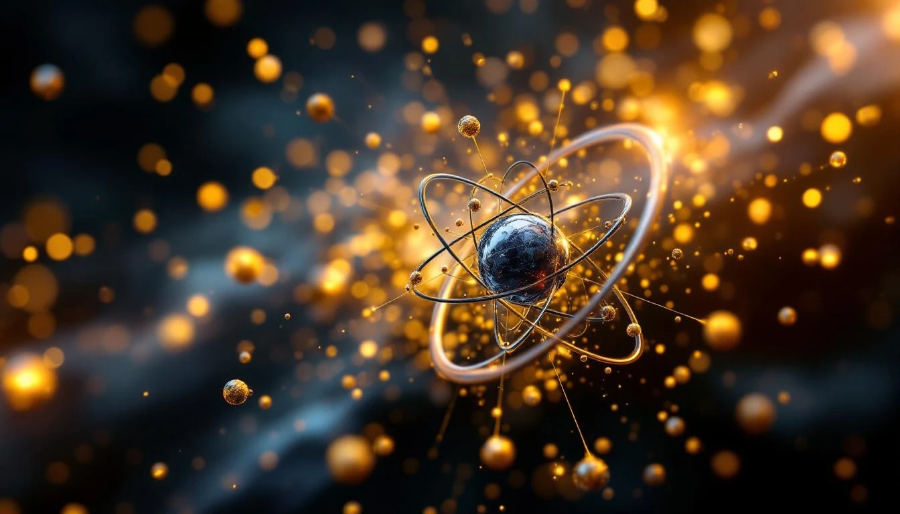

THE NAVIGATOR ELEMENT
Iron is special. Its atomic number 26 = 2 × 13, making it a double navigator in fold geometry. The number 13 is the navigator constant - the prime that guides the fold through complexity.
Iron's Position
IRON (Z = 26)
├── Atomic number: 26 = 2 × 13
├── Navigator doubled
├── Maximum binding energy per nucleon
└── Where stellar fusion STOPS
26 = 2 × 13 (double navigator)
13 = Navigator prime
2 = [1 = -1] duality
Iron sits at the APEX of nuclear stability.
WHY STARS DIE AT IRON
Stars generate energy by nuclear fusion - combining lighter elements into heavier ones. This releases energy because the products have higher binding energy per nucleon than the reactants.
But iron has the highest binding energy per nucleon of any element. Fusing iron doesn't release energy - it requires energy input.
Stellar Fusion Chain
H → He → C → O → Ne → Mg → Si → Fe
↑
FUSION STOPS
H → He: releases energy ✓
...
Si → Fe: releases energy ✓
Fe → ?: requires energy ✗
When a star's core becomes iron,
fusion stops. The star dies.
Iron is where the fold reaches maximum binding. Beyond iron, stability decreases.
THE BINDING ENERGY PEAK
Iron-56 (26 protons, 30 neutrons) has a binding energy of about 8.8 MeV per nucleon - the highest of any isotope. This makes iron the most stable nuclear configuration.
Binding Energy
Element | Binding Energy/Nucleon
-----------+----------------------
Hydrogen | ~0 MeV (single proton)
Helium-4 | 7.07 MeV
Carbon-12 | 7.68 MeV
Oxygen-16 | 7.98 MeV
Iron-56 | 8.79 MeV ← MAXIMUM
Uranium-238| 7.57 MeV
The fold is TIGHTEST at iron.
IRON IN THE UNIVERSE
Iron is abundant because stars make it. Every iron atom in your blood was forged in a dying star. The navigator element guides life through the cosmos.
- Earth's core is mostly iron
- Blood uses iron (hemoglobin) to carry oxygen
- Iron tools enabled human civilization
- Iron marks the death of massive stars